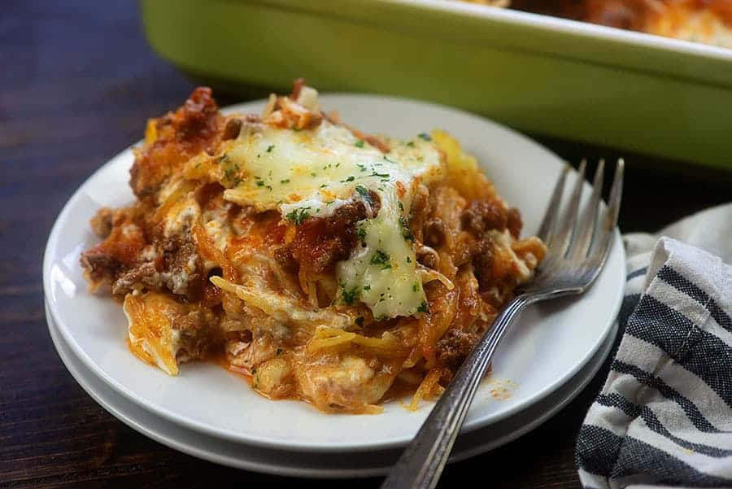

Million Dollar Spaghetti Squash

Description
Time to Table: 1.5 hours
Equipment Required:
- oven
- saucepan or skillet
- casserole dish or cake pan, approximately 13 x 9
- microwave and microwave safe bowl
- chef's knife
- fork and spoon
- silicone spatula
Ingredients
- 1 spaghetti squash
- 1 lb ground meat (beef or sausage recommended)
- 1 jar spaghetti sauce of choice (tomato basil recommended)
- 8 oz cream cheese
- 1/4 cup sour cream
- 2 small cans or 1 large can sliced black olives
- 16 oz bag shredded mozzarella (likely will not use entire bag)
- 2 tbsp olive oil
- dash of salt
- rosemary to taste
- thyme to taste
Steps
- Preheat oven to 350.
- Cut squash in half, lengthwise.
- Rub interior halves of squash with olive oil and salt.
- Place both halves of squash facedown into 13x9 baking dish.
- Bake squash for 1 hour or until fork tender.
- 20 minutes prior to removing squash from oven, add ground meat, thyme, and rosemary to skillet.
- Break meat into small bite sized chunks and brown.
- When meat is fully cooked, add in jar of spaghetti sauce.
- Bring sauce to a simmer, and let simmer for 5 minutes.
- Remove from heat.
- Place cream cheese in bowl and microwave for 10 second increments until soft and malleable.
- Add sour cream to cream cheese and mix.
- When squash is done, pull apart one half with fork. Will resemble a soft shredded pork texture.
- Line bottom of baking dish with layer of squash.
- Use half of prepared meat sauce and layer on top of squash evenly.
- Use entire bowl of cream cheese mixture and smooth out evenly. Smooth out with a silicone spatula to make a flat layer.
- Repeat squash and sauce layers with other halves.
- Top final sauce layer with desired amount of cheese and olives.
- Place dish back into oven and bake for another 20 minutes.
- Enjoy!